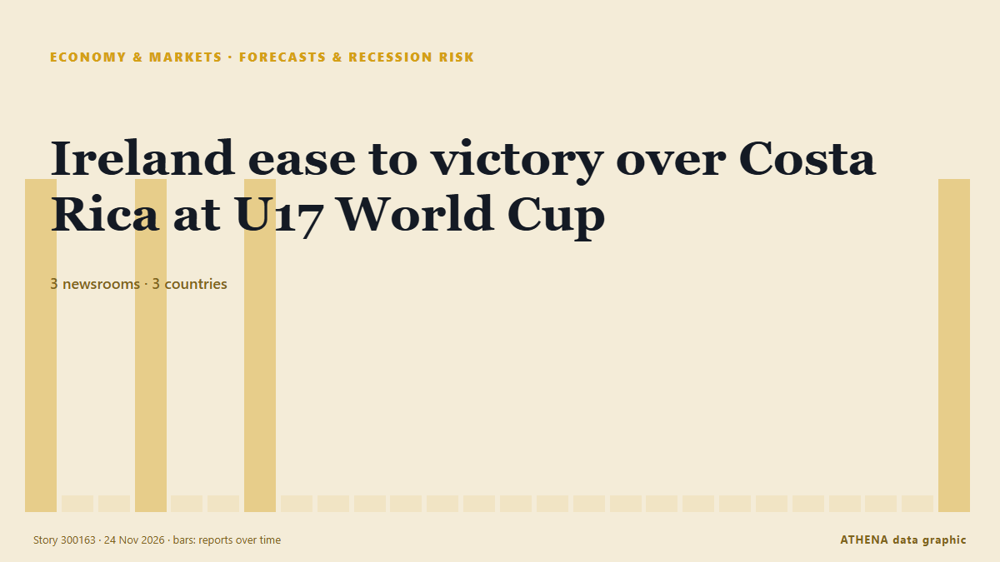

Economics, Finance & Markets
SponsoredPresented by  Cybernetics and Artificial Intelligence Lab Welcome to the Cybernetics and Artificial Intelligence Laboratory, established at the Department of Business Administration of the National and Kapodistrian University of Athens. The lab is headed by Professor Dimitrios Thomakos. The lab aims to do research that can be published in top venues. Our research uses tools and methods of Artificial Intelligence, and lies in the following areas: - Forecasting - Decision making - Cyber security - Finance We are always looking forward to collaborating with exceptional students!
Cybernetics and Artificial Intelligence Lab Welcome to the Cybernetics and Artificial Intelligence Laboratory, established at the Department of Business Administration of the National and Kapodistrian University of Athens. The lab is headed by Professor Dimitrios Thomakos. The lab aims to do research that can be published in top venues. Our research uses tools and methods of Artificial Intelligence, and lies in the following areas: - Forecasting - Decision making - Cyber security - Finance We are always looking forward to collaborating with exceptional students!
Market monitor - official figures
Which way official market measures are moving - up, down or flat - with the latest official figure and its date, and the market news ATHENA verified alongside. Official figures, not live prices.
Energy
| 1 day | 1 week | 1 month | Official figure | |
|---|---|---|---|---|
| Brent crude | ▬ | ▲ | ▼ | $92.94/bblOfficial data of 17 Nov 2026 |
| WTI crude | ▲ | ▼ | ▼ | $89.53/bblOfficial data of 17 Nov 2026 |
| US natural gas (Henry Hub) | ▼ | ▲ | ▼ | $3.10/MMBtuOfficial data of 17 Nov 2026 |
| European natural gas (1 month · 3 months · 12 months)(1M · 3M · 12M) | ▲ | ▲ | ▲ | $25.49/MMBtuOfficial data of 1 Sep 2026 |
| Coal (Australia) (1 month · 3 months · 12 months)(1M · 3M · 12M) | ▲ | ▲ | ▲ | $153.84/tOfficial data of 1 Sep 2026 |
Food
| 1 month | 3 months | 12 months | Official figure | |
|---|---|---|---|---|
| Wheat | ▲ | ▲ | ▲ | $246.85/tOfficial data of 1 Sep 2026 |
US stock markets
| 1 day | 1 week | 1 month | Official figure | |
|---|---|---|---|---|
| S&P 500 | ▼ | ▼ | ▼ | Unusual move Direction only (index © Cboe)Official data of 20 Nov 2026 |
| Nasdaq Composite | ▼ | ▼ | ▼ | Direction only (index © Cboe)Official data of 19 Nov 2026 |
Rates, risk and the dollar
| 1 day | 1 week | 1 month | Official figure | |
|---|---|---|---|---|
| US 10-year Treasury yield | ▼ | ▼ | ▼ | 4.92 %Official data of 20 Nov 2026 |
| Market volatility (VIX) | ▼ | ▲ | ▲ | Unusual move Direction only (index © Cboe)Official data of 23 Nov 2026 |
| US dollar, broad index | ▬ | ▲ | ▲ | 123.60Official data of 20 Nov 2026 |
The euro against other currencies
| 1 day | 1 week | 1 month | Official figure | |
|---|---|---|---|---|
| EUR/USD | ▲ | ▼ | ▼ | 1.0963 USDOfficial data of 24 Nov 2026 |
| EUR/GBP | ▬ | ▲ | ▼ | 0.8370 GBPOfficial data of 24 Nov 2026 |
| EUR/CHF | ▬ | ▼ | ▼ | 0.9183 CHFOfficial data of 24 Nov 2026 |
| EUR/JPY | ▲ | ▼ | ▼ | 174.39 JPYOfficial data of 24 Nov 2026 |
| EUR/CNY | ▲ | ▼ | ▼ | 7.3063 CNYOfficial data of 24 Nov 2026 |
| EUR/TRY | ▲ | ▲ | ▼ | 55.503 TRYOfficial data of 24 Nov 2026 |
| EUR/NOK | ▬ | ▲ | ▲ | 10.7350 NOKOfficial data of 24 Nov 2026 |
Sources: US Energy Information Administration (oil, US gas), IMF (European gas, coal, wheat), US Treasury and Federal Reserve (10-year yield, dollar index) Cboe (VIX), S&P Dow Jones Indices (S&P 500) and Nasdaq (Nasdaq Composite), via FRED (Federal Reserve Bank of St. Louis); euro reference rates © European Central Bank. Figures are the latest official values with their date - not live prices. Directions are computed by ATHENA.
Crypto, ETFs and shares in the news
- Australia shares join global relief rally after Huang returns to Nvidia Risk 3.0 24 Nov
- AI stocks rebound: How Nvidia’s comeback lifted Asian and US markets Risk 3.4 24 Nov
- Nvidia shares fall in premarket trading as Jensen Huang’s return sparks US political backlash – business live Risk 2.4 24 Nov
- Anthropic falls below $83 IPO price in swift reversal after record listing Risk 0.0 24 Nov
- Anthropic’s Record IPO Raises Hopes for a Charitable Windfall That Has Nonprofits Preparing to Scale Risk 0.0 24 Nov
- US seeks to recover $1.1B in crypto stolen in North Korea-linked Binance hack Risk 3.5 24 Nov
- Morgan Stanley gives Greek stocks a vote of confidence for 2027: Its top picks revealed Risk 0.8 24 Nov
- CFTC staff say bitcoin, ether can count toward derivatives firms’ operating expenses Risk 0.0 24 Nov
- (LEAD) SK hynix's U.S.-traded shares surge over 20 pct in Mon. morning trading after Nvidia CEO's reinstatement Risk 0.0 23 Nov
- Dubai Islamic Bank shares surge 11% on potential acquisition deal Risk 1.0 23 Nov

Forecasts & recession riskIreland ease to victory over Costa Rica at U17 World Cup
The Boys in Green look set to qualify for the knockout stages. from TheJournal.ie
| 11 Nov | 129 |
|---|---|
| 12 Nov | 113 |
| 13 Nov | 71 |
| 14 Nov | 39 |
| 15 Nov | 64 |
| 16 Nov | 127 |
| 17 Nov | 101 |
| 18 Nov | 104 |
| 19 Nov | 108 |
| 20 Nov | 77 |
| 21 Nov | 36 |
| 22 Nov | 43 |
| 23 Nov | 83 |
| 24 Nov | 29 |
Mexican Peso: Gains against US Dollar expected as Fed hike bets fade – Rabobank
Rabobank strategists Molly Schwartz and Christian Lawrence note that safe-haven US Dollar (USD) demand and weaker carry have lifted USD/MXN above 19. from FXStreet
Singapore and China to expand renminbi financing, explore cross-border payment link
The MAS RMB Facility will be enhanced and restructured into two parts. from The Business Times
Ukraine aid expected to cost next EU budget 55 billion euros in interest payments alone
It is not yet known how exactly the 55.4 billion euros will be paid. from Kyiv Independent
AO World lowers profit outlook as under-pressure shoppers cut back
The Bolton-based firm had said in June that it was on track to meet 2026-27 profit forecasts. from The Irish News (Belfast)
NBC strengthen commitment to finance mining sector, empower small-scale miners
DAR ES SALAAM: The National Bank of Commerce (NBC) has committed to expanding financial support across Tanzania’s mining sector, with particular emphasis on improving small-scale miners’ access to… from Daily News
Israeli army raids Palestinian refugee camp, launches arrest campaign in occupied West Bank
Army forces turn child center in Al-Amari refugee camp into interrogation site for detainees, local sources say. from Anadolu Agency (English)
Eight weeks of part-time work for €3k up for grabs as Census 2027 jobs open
The CSO is hiring field support officers who will replace the traditional census enumerator role. from TheJournal.ie
Rats will keep away from sheds in winter if UK households carry out three key tasks in November
Garden sheds can be the perfect winter hideaway for rats, but three expert-recommended steps could help prevent these unwanted pests from nesting before the colder weather sets in. from Manchester Evening News
US seeks to recover $1.1B in crypto stolen in North Korea-linked Binance hack
US prosecutors are seeking control of stolen USDC, while Elliptic says hackers have moved $247 million through Bitcoin mixers. from Cointelegraph
Oil prices exceed $92 on global commodity markets
Retail fuel prices in Cambodia fell again yesterday following a decline in international oil markets, according to the Ministry of Commerce. from Khmer Times
DR Congo reimposes cobalt export ban to shore up prices
Move marks second time in two years that the world’s top producer of the metal has cut off supply to try to gain leverage over market. from Financial Times - Markets
Illegal property purchases down after Aykut conviction, president says
President Nikos Christodoulides said on Sunday that purchases of Greek Cypriot properties in the occupied north by Israeli nationals had fallen dramatically following the conviction of property… from Cyprus Mail
Malaysia set to hold rates on strong growth, signal hike in 2027
Inflation in Malaysia remain moderate, despite a surge in global oil prices. from The Business Times
Two bank executives and company nominee jailed over fake tax refund scheme
Bank branch manager in eastern Attica denies wrongdoing in testimony – Nine other suspects, including accountants alleged to have played a central role in the operation, are expected to give evidence… from ProtoThema English
(LEAD) SK hynix's U.S.-traded shares surge over 20 pct in Mon. morning trading after Nvidia CEO's reinstatement
WASHINGTON, Nov. 23 (Yonhap) -- U.S.-traded shares of South Korean chipmaker SK ... from Yonhap (English)
Lucy Powell promotes UK education in China despite risks
The U.K. education secretary's visit to Beijing comes days after Wes Streeting praised the government for stepping up its interaction with China. from Politico Europe
Trump to welcome investors at gala for his plunging meme coin
President Donald Trump will host a gala for investors of the $TRUMP meme coin, which has seen its value plummet from approximately $75 to under $1 in 20 months. from Arab News
Shoppers rush to buy gold
Sharp price drop drives demand for jewellery and gold bars. from News of Bahrain
Cold weather threatens Europe's already strained gas reserves
Forecasts of a sharp drop in temperatures across Europe have triggered a rapid increase in natural gas prices. from AzerNews
Japanese Yen strengths as inflation data reaffirms BoJ rate hike bets
The USD/JPY pair edges lower during the Asian session on Friday following the release of Japan's consumer inflation figures, which lifts Bank of Japan (BoJ) rate hike bets and underpins the Japanese… from FXStreet
Kipit Asset Management Appoints Mr. Luke Ofojebe, CFA, as Acting Managing Director
As part of its strategic positioning, Kipit Asset Management Limited (formerly Fortuna Capital Limited), a Securities and Exchange Commission (SEC) licensed Fund & Portfolio Management Company, has… from Vanguard
Moody’s revises Hungary’s rating outlook to stable
Moody’s affirmed Hungary’s sovereign rating at Baa2 while revising the outlook from negative to stable. from FXStreet
Sri Lankans spend Rs. 560Mn daily on alcohol
Alcohol-dependent individuals in Sri Lanka collectively spend around Rs. from Daily Mirror
Infected TV boxes in BADBOX 3.0 rent out their owners’ home internet
HUMAN’s Satori Threat Intelligence and Research Team has disrupted BADBOX 3.0, an operation run mainly from infected low-cost TV boxes that generated roughly 40 billion ad bid requests a day at its… from Help Net Security
Art Basel Hong Kong Lines Up 232 Exhibitors and a New Floor Plan for Its 2027 Edition
The fair will also feature 31 first-time exhibitors. from ARTnews
Israeli attacks on medics in occupied West Bank surge by 350%: Rights group
Physicians for Human Rights Israel says medics face 'dangerous escalation' in violence from soldiers and settlers. from Al Jazeera English
Unpaid rent: when does liability of guarantors end?
A guarantee under a tenancy agreement is neither a mere formality nor simply an expression of trust in the tenant. from Cyprus Mail
‘No use pretending otherwise’: Chalmers warns of tough year ahead as jobless and inflation forecasts worsen
Jim Chalmers is warning of a year “full of risks”, saying unemployment and inflation will be higher and economic growth slower. from Sydney Morning Herald
Investors flip the switch on the AI trade
After tech stocks tumbled, are markets entering a new era? from Financial Times - Markets
SK Hynix to become Kioxia's top shareholder with bond conversion
Korean chip giant SK hynix Inc. is considering converting convertible bonds (CBs) linked to its investment in Kioxia Corp., a Japanese NAND flash memory maker, into shares, industry sources said… from The Korea Times
How ‘GTA VI’ surpassed all expectations
You can paint your bedroom walls. You can scuba dive and explore shipwrecks. from Bangkok Post
UAE weather: Red alert issued for fog; temperatures to dip to 18ºC in some areas
Residents in the UAE can expect fair to partly cloudy weather conditions on Sunday, November 22, according to National Centre of Meteorology (NCM). from Khaleej Times (working feed)
Retail sales volumes jump 2.2%, biggest rise since December 2021
September quarter retail sales have surprised on the upside. from New Zealand Herald
S&P 500 Sinks 3.7% and Nasdaq Composite Goes Negative for the Year as Tech Sell-off Worsens
A bruising sell-off in artificial intelligence stocks on Friday pulled the S&P 500 down 3.7%, dragging the index to its worst weekly loss in more than 18 months, and knocking the Nasdaq composite… from The National Herald